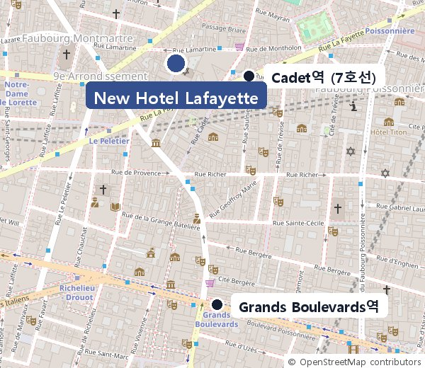
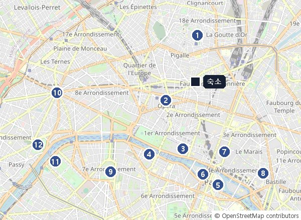
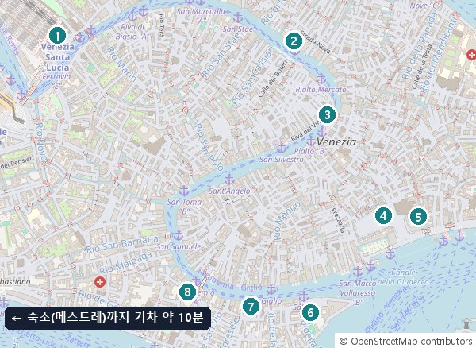
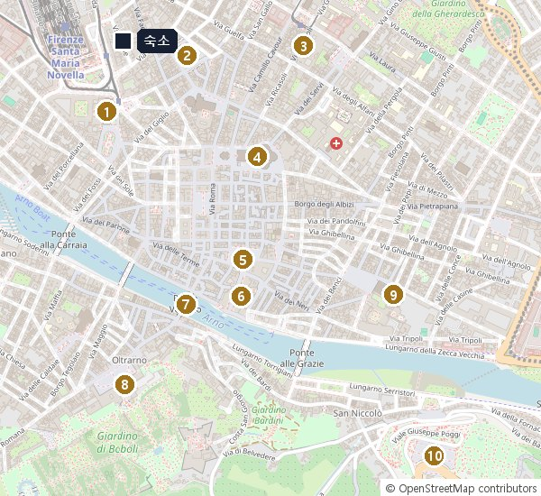
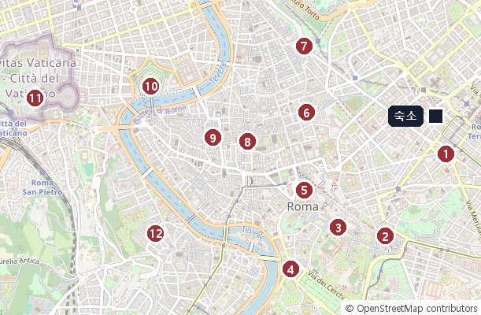

28
인천에서 파리로
- 10:05인천공항 출발, 아시아나 OZ501 (약 14시간 20분)
- 16:25파리 샤를드골 공항 도착
- 도착 후공항 미팅 후 호텔까지 1커플 단독 전용차량 포함
현지인 또는 한국인 기사가 공항에서 맞이합니다. 캐리어는 1인 1개 기준이며, 더 있으면 추가 요금이 붙습니다. - 저녁New Hotel Lafayette 체크인 후 자유 시간
조식 기내식, 중식 기내식, 석식 자유
2026년 12월 28일 ~ 2027년 1월 9일, 11박 13일 신혼여행
오늘 일정 보기현지 사정에 따라 시간이 바뀔 수 있으니, 출발 전 최종 확정서와 티켓을 다시 확인하세요.
| 날짜 | 구간 | 시간 |
|---|---|---|
| 12/28 (월) | 인천 → 파리 샤를드골아시아나 OZ501 직항, 약 14시간 20분 | 10:05 – 16:25 |
| 1/1 (금) | 파리 → 베네치아유럽 내 항공, 1시간 40분 | 14:25 – 16:05 |
| 1/3 (일) | 베네치아 메스트레역 → 피렌체 S.M.N역열차, 약 2시간 | 10:00~10:30대 출발 |
| 1/5 (화) | 피렌체 S.M.N역 → 로마 테르미니역열차, 약 1시간 40분 | 18시대 출발 |
| 1/8 (금) ~ 1/9 (토) | 로마 → 인천아시아나 OZ562 직항 | 22:00 – 다음날 17:35 |
포함 상품에 포함된 일정, 개별 직접 이동하거나 따로 준비하는 일정입니다.

자유 시간: 12/28 저녁, 12/29(스냅 촬영 외), 12/30 투어 후, 12/31 종일, 1/1 오전

이름을 누르면 Google 지도가 열립니다. 휴관일과 입장료는 바뀔 수 있으니 가기 전에 확인하세요.
1. 몽마르트르 언덕, 사크레쾨르 성당, 오페라 가르니에, 라파예트 백화점, 마들렌 성당
2. 포룸 데 알, 퐁피두 센터(2030년까지 공사로 휴관, 외관만), 마레 지구, 보주 광장, 바스티유 광장
3. 앵발리드, 몽마르트르 언덕, 사크레쾨르 성당, 화가들의 거리, 바토라부아, 사랑해 벽
시내: 샹젤리제 거리, 개선문, 트로카데로 광장(에펠탑 전망), 알렉상드르 3세교, 그랑팔레와 쁘띠팔레, 파리 시청, 노트르담 성당, 셰익스피어 앤 컴퍼니, 생미셸 거리
루브르: 박물관 내부를 가이드와 함께 관람
오르세 미술관 + 몽마르트르 투어는 화·목에만 진행돼 이날은 루브르 투어로 진행합니다. 전용차량 투어(최대 2팀)로 바꾸면 1인 20만원이 추가됩니다.
현지 사정에 따라 운행 시간이 바뀔 수 있습니다.
자유 시간: 1/1 저녁, 1/2 투어 후 오후. 본섬 안은 걷거나 수상버스(바포레토)로 다닙니다.

이름을 누르면 Google 지도가 열립니다. 휴관일과 입장료는 바뀔 수 있으니 가기 전에 확인하세요.
유럽 내 항공은 저비용 항공 기준으로 위탁 수하물이 1인 1개, 15~20kg입니다. 짐이 더 있으면 탑승 한 달~2주 전(12/18 무렵)까지 항공사 웹사이트에서 추가 수하물을 신청해야 합니다.
비가 오면 스냅촬영은 진행되지 않고 환불도 없습니다. 스냅촬영을 원하지 않으면 출발 한 달 전(11/28)까지 여행사에 알려야 합니다.
자유 시간: 1/3 오후, 1/4 종일, 1/5 낮. 1/4(월)에는 우피치·아카데미아·피티 궁전이 쉽니다.

이름을 누르면 Google 지도가 열립니다. 휴관일과 입장료는 바뀔 수 있으니 가기 전에 확인하세요.
우피치 미술관은 보통 월요일에 쉽니다. 우피치는 1/5(화) 낮에 다녀오는 것을 권합니다.

자유 시간: 1/5 저녁, 1/6 종일(이탈리아 공휴일, 바티칸 휴관), 1/7 투어 후, 1/8 오전

이름을 누르면 Google 지도가 열립니다. 휴관일과 입장료는 바뀔 수 있으니 가기 전에 확인하세요.
1. 스페인 계단, 콘도티 거리, 트레비 분수, 판테온, 베네치아 광장, 비토리오 에마누엘레 2세 기념관
2. 포로 로마노, 콜로세움, 콘스탄티누스 개선문, 대전차 경기장, 진실의 입
1월 6일은 이탈리아 공휴일(주현절)이라 바티칸 박물관이 쉬고, 일부 상점·명소가 단축 운영할 수 있습니다.
바티칸 박물관: 피나코테카, 솔방울 정원, 동물의 방, 팔각 정원, 원형의 방, 이집트관, 피오 클레멘티노관, 뮤즈의 방, 아라찌의 방, 성모 마리아의 방, 그리스 십자가의 방, 촛대의 회랑, 라파엘로의 방, 시스티나 성당, 성 베드로 광장과 대성당, 미켈란젤로의 피에타
로마 시내: 콜로세움과 포로 로마노(외관), 대전차 경기장, 트레비 분수, 스페인 계단
바티칸 박물관이 쉬는 날이면 로마 시내 투어(콜로세움·포로 로마노 내부) 또는 남부 투어(단체)로 바뀝니다. 바티칸 박물관은 1/6(주현절)에 쉬고, 투어 날인 1/7에는 문을 엽니다.
문장을 누르면 화면 가득 크게 보여 줍니다. 한글 발음은 대략 적었습니다.
Trip Concierge Service: 여행 중 사고나 항공·열차 문제가 생기면 현지 매니저가 언어를 도와줍니다. 현지 시간 09:00~18:00에 전화나 카카오톡으로 연락하며, 연락처는 최종 확정서에 있습니다.